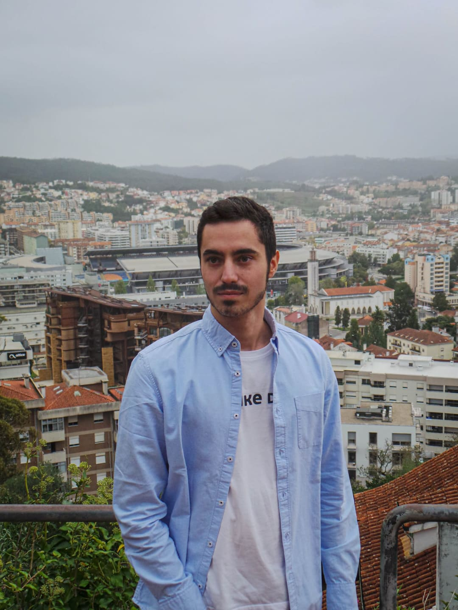

A Equipa 20Cafés/dia
Eduardo Correia | Azenyr
Funções:
Fundador, Criador de conteúdo, Editor de Vídeo, Streamer, Organizador, Website Developing & Maintainer, Server Maintainer, Relações Públicas
Sobre:
Fundador. Obcecado por tecnologia e jogos desde nascença, sempre sonhou em criar algo grande. Esse algo começou agora
aos 24 anos, com a ideia dos 20Cafés/dia, uma comunidade aberta de tech e gaming portuguesa. Já montou vários
PC Desktops completos e vários setups, adora minimalismo e profissionalismo.
Formado profissionalmente em FullStack Web Developing, é quem cria do absoluto zero e com as melhores tecnologias, o site oficial 20cafes.com (sim, sou eu!).
Adora RGB para puder escolher ao pormenor a melhor cor para o setup e o momento, mas odeia ter os seus leds em modo "Arco-Íris".
Viciado em café.

André Silva | Slynders
Funções:
Fundador, Criador de conteúdo, Manager do Servidor Minecraft e Discord 20C, Relações Públicas
Sobre:
O segundo fundador e um dos criadores iniciais do 20Cafés/dia, de momento ausente da criação de conteúdo devido a outras prioridades profissionais,
também sempre foi obcecado por tecnologia e gaming. Amante de Minecraft (só gosta de hardcore vanilla e sem mods!) e de League of Legends.
De momento é Outsystems Developer numa empresa.
Viciado em café.
Henrique Oliveira | Sohjita
Funções:
Criador de conteúdo, Streamer, 2D & 3D Graphics Designer, Animator, Game Developer, Admin do Servidor Minecraft 20C
Sobre:
Outro grande criador de conteúdo e assets do 20Cafés/dia. Entrou mais tarde na equipa, mas entrou bem a tempo, e de momento é um dos
recursos humanos mais valiosos da comunidade. Cria as animações 2D para ser usado pelo Editor nos vídeos todos. Cria Arte original ao seu
próprio estilo para a nossa Merch Store (Visita! No menu no topo do ecrã, entra em "Merchandise"!). É extremamente culto no que toca
a gaming e tecnologias relacionadas. Tem uma impressora 3D e cria/imprime os nossos pequenos mas valiosos porta-chaves (e não só) que vendemos
aqui no site na "Loja Oficial".
Viciado em café.
Todos vocês!
Funções:
Serem excelentes e estarem sempre por cá para nos aturar.
Sobre:
A melhor comunidade do mundo.
O 20Cafés/dia não era absolutamente nada sem a sua crescente comunidade.
Ainda não fazes parte desta comunidade incrível? Adere nos links sociais já aqui no final desta página! Principalmente ao nosso Discord!
Obrigado 💙